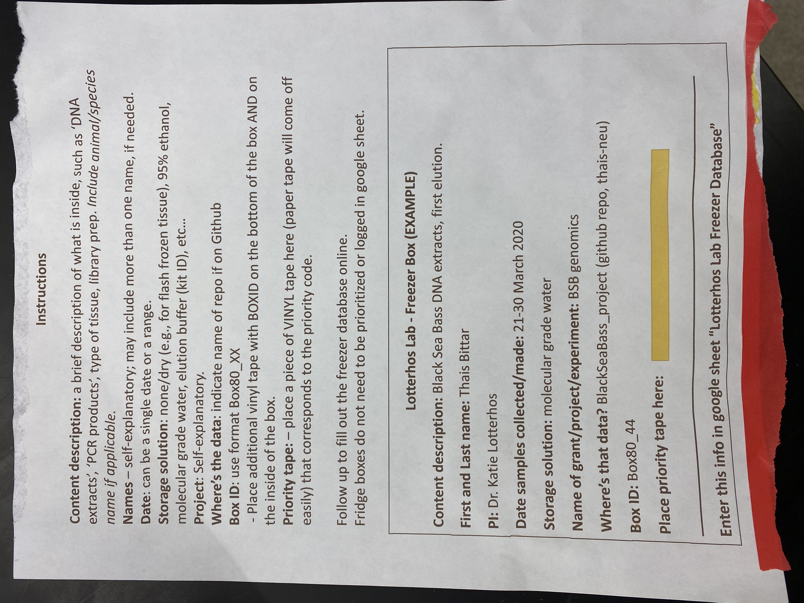
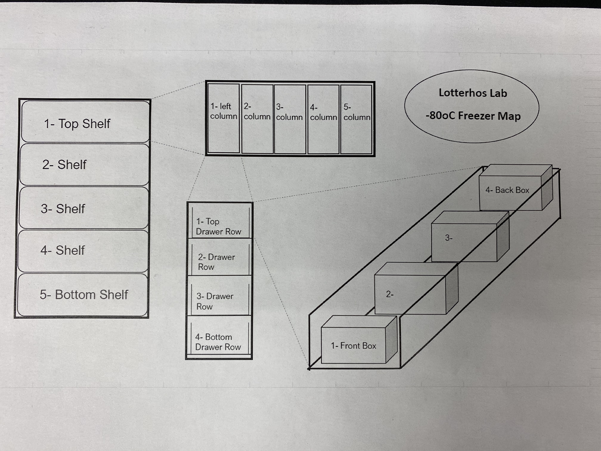
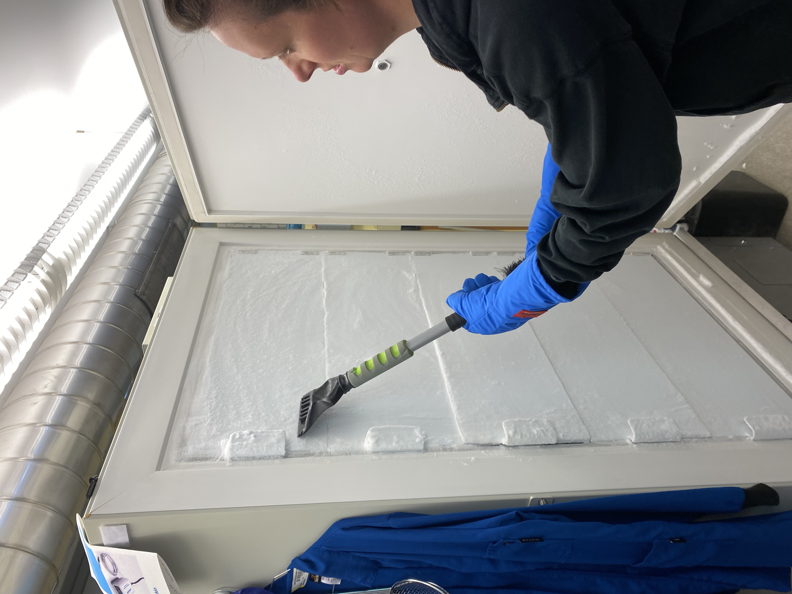
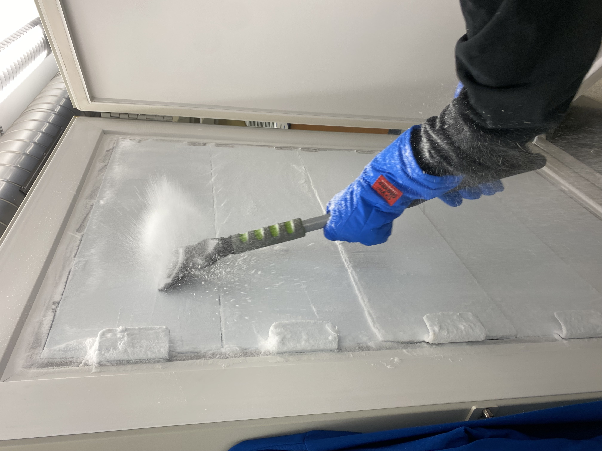
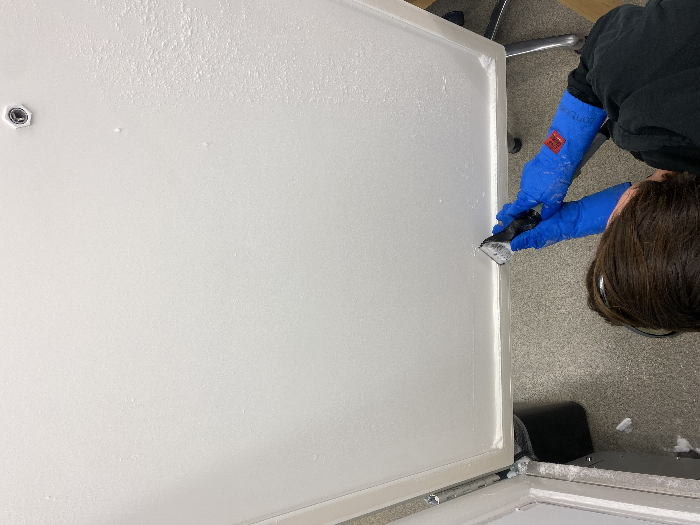
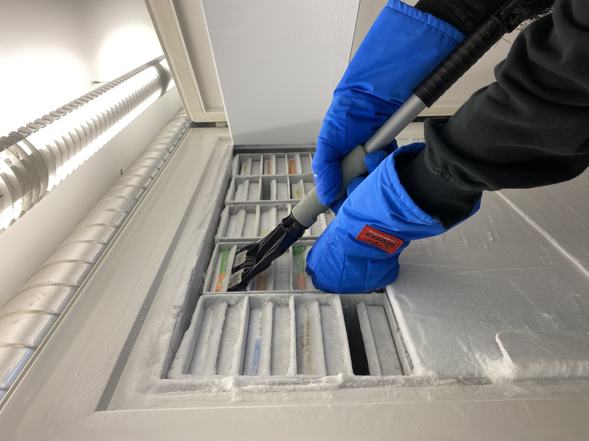
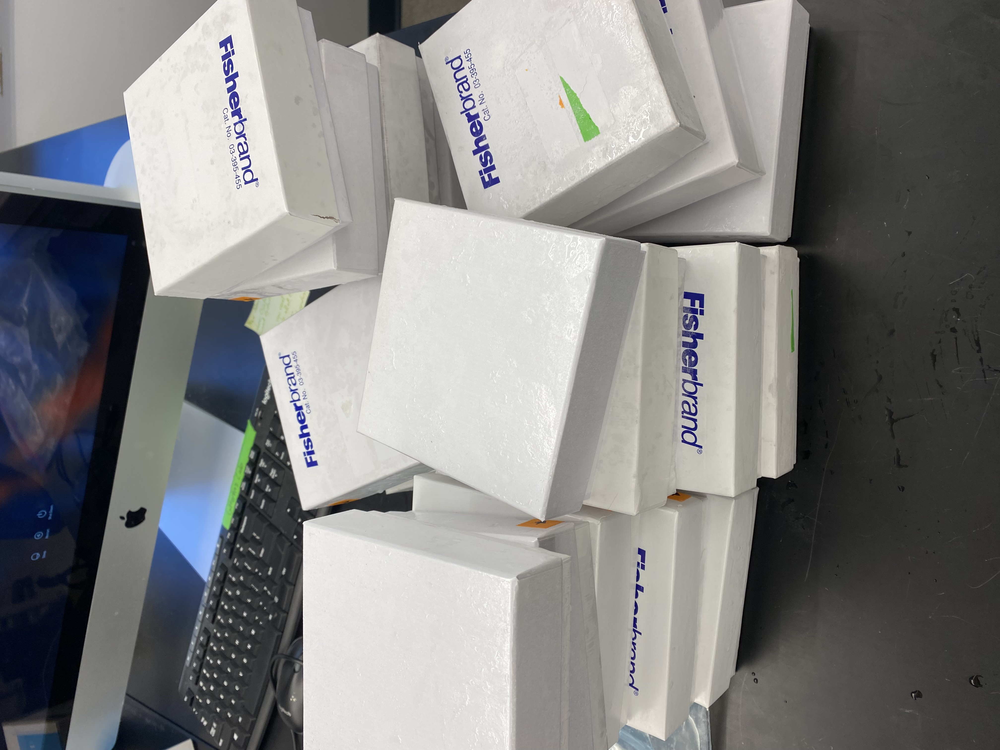
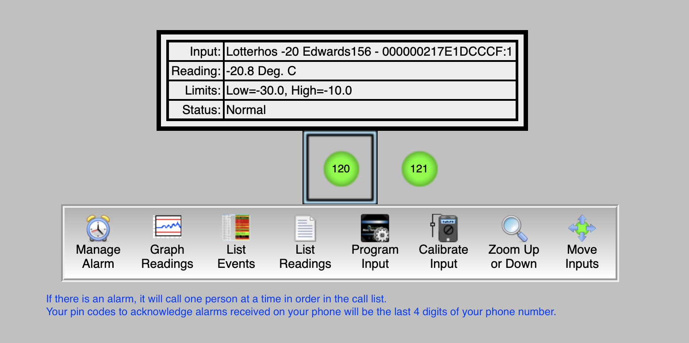
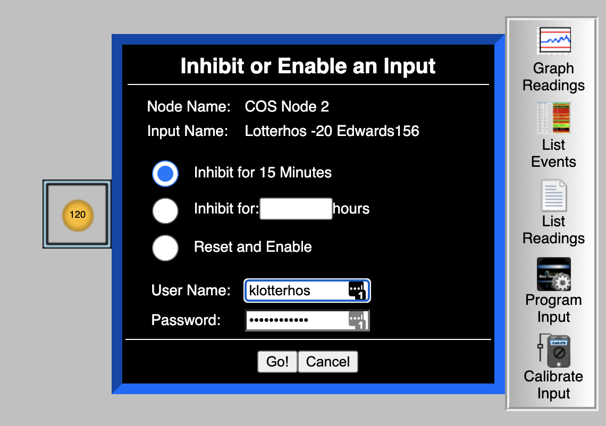

Freezers and Freezer Alarm System
Freezer label templates
General -80 Freezer Organization Protocol & Clean Out Notes, May 2024
General Practices for -80 Freezer Organization
Making a New Freezer Box
Use the Freezer App to browse empty freezer locations. Choose the location you’d like to store your box.
Generate info about your box. The BoxID should follow the template Box80_XXXX. Use the printed freezer labels (available in a ziploc bag on the front door of the -80) to attach information to each box as a sticker. Fill out the label according to the following template and update all fields in the app.

- Before you open the freezer, use the -80 map to familiarize yourself with the location. Do not allow the freezer door to hang open. Open the freezer and store your box!

- Make sure all data looks complete by checking the Freezer Database. If so, you’re good to go!
Clean Out Notes, May 21 2024 (Katie, Madeline, Camille, Lee)
The first thing we did is review the New Freezer App and located any unmapped boxes or boxes that we want to discard. We also checked the data Freezer Database Spreadsheet. Katie can approve access to the Freezer App and Database.
When we first opened the freezer, Katie scraped the ice from all of the shelf doors and handles. We had some ice build up around the seal, so we brushed it gently. When removing ice from the seal, do NOT use the sharp edge of the blade, this can cause nicks in the seal. We removed as much excess frost as possible.



- Then we discarded boxes that we didn’t have any data for (Unmapped Boxes section in app). One trick for opening shelves that are tightly sealed from the frost is to use the ice scraper like a crowbar (wiggle up and down, then pull the shelf out).

- When we removed the boxes from the freezer, we removed all tape and labels, disposed of vials in the trash, and left the old boxes out to thaw. For this part, it was helpful to have one person on the data calling out the box numbers, one person at the freezer pulling out the shelves and placing them in a cooler on ice, and a third & fourth person emptying the vials, pulling off the tape, and stacking the boxes. Confirm each box was correctly removed from the app before tossing the vials.

- We consolidated bags as much as possible, changing the “Discard” status to TRUE for bags and boxes that no longer exist. This keeps a record of the boxes that were discarded.
-80C Serial Number (Katie fix this later)
NU contact: Dennis Todd. Email Dennis to update the list of users who have access and are on the call list.
Here is the link for the Rees system: http://NOR926.ReesCloud.net
Your logins are first initial, last name/names. All lowercase with no spaces or extra characters, just letters.
Phone alarm handling instructions
Instructions for inhibiting the alarm
Your pin codes to acknowledge alarms received on your phone is last 4 digits of your contact numbers
Add the alarm phone to your list of contacts: the phone number that would be calling is Node 2 Phone 16176081423
When you log in, our freezers are labeled 120 (the -20C in Edwards) and 121 (the -80C in Edwards)
The alarm will go off when the freezer rises above -70C
If you plan on loading samples in the freezer
Click on “Manage Alarm”
Disable the alarm for an hour or so (there is a max that is allowable, but not sure what it is).
Please be careful not to let the temperature drop while you are loading samples. If the temperature reaches -65C, wait until it gets back up to -75C before you load more samples. It puts a lot of stress on the freezer.
If you plan to defrost the freezer
We need to contact Dennis Todd to request a 24hr+ freezer alarm shutoff.


Defrosting the -80C freezer
CryoCube-F570 operating manual
To do ahead of time:
Find a backup freezer for the samples and confirm that there’s enough space for all contents of our freezer; check the dimensions of the available shelves in the backup freezer to see if it is the same as ours (ideally, transfer whole racks to the equivalent shelf & rack position on the backup freezer to save time and avoid messing up the inventory).
Find help - defrosting can be done by one person, but having a second pair of hands is very helpful and strongly recommended.
Familiarize yourself with the protocol to disable freezer alarms (see above), with the materials that need to be on hand to defrost & clean the freezer and the overall protocol/timeline described below.
The day of transfer/defrost:
- Before you begin, double-check that the backup freezer(s)’ alarm was disabled (see above instructions); request that our alarm is disabled remotely for 24h by emailing Dennis Todd @ northeastern; gather:
Freezer mittens
Lab cart
A mop or large towel
‘Wet floor’ sign
A cooler or large styrofoam box for lose boxes/bags
A bucket to collect water
Clean cloths to wipe the freezer
- WEARING FREEZER MITTENS, transfer whole racks to the backup freezer: place all 5 racks from one shelf on our lab cart; roll the cart to the backup freezer and place them on the equivalent shelf and in the same order as they were on our freezer. Do this one shelf at the time until the freezer is empty.
Transfer racks in and out of freezers carefully but quickly to minimize temp rising - note that the drawers slide open, so keep the racks horizontal; monitor both freezer’s temp as you transfer - shouldn’t rise above -65oC.
- Once empty:
Put up a “wet floor” sign,
Close the CO2 cylinder valve,
Switch off the local alarm box located on top of the freezer,
Unlock the switch locking plate (front-bottom-right side of the freezer) and switch off the battery (top) and the main (bottom) switches,
Unplug the freezer from the wall,
Open all doors and let the freezer defrost, use a bucket to catch water dripping from the doors, use a mop to dry up the puddles.
Once defrosted: wipe the whole interior of the freezer, the inner and outer doors and the seal using clean microfiber cloths (under the lab sink) until completely dry.
Reverse to bring freezer back up: close all doors, plug freezer back up, switch on main switch/battery switch and lock up the locking plate, switch on alarm box up on top of the freezer. Monitor temperature to ensure that it is appropriately decreasing all the way to -80oC.
During this stage, the freezer alarm may go off (not the alarms associated with the remote system), just mute it using the door pannel keys.
Refill our freezer
Note: (At least 24h after temp is back to -80oC on the empty freezer)
Disable our freezer alarm for 1h (instructions above). Set a timer for yourself for 55 min because you might need to extend alarm cancellation. Check with the host lab on whether the alarm on the backup freezer needs to be disabled.
WEARING FREEZER MITTENS Transfer freezer racks back and ensure they are placed back on the freezer position (shelf & row) where they before - so it continues to match the freezer database. Leave one or two empty racks in the freezer for new boxes. Monitor The temperature of both freezers during retrieval to ensure it does not raise above 65oC.
If you need to take a break to allow the temperature to drop, remember to extend the alarm cancellation for another hour.
Once all samples are back, wait around and make sure that the freezer temp drops down to -80oC.
Example timeline:
October 2021 defrost (Thais, Sara and Alan):
OGL was able to hold our samples (MUST coordinate with OGL personnel ahead of time); OGL’s freezers was completely empty, and shelves have the same dimensions as ours (plus an extra shelf); their freezer was not hooked up to an alarme system at the time.
We were able to transfer all racks to the equivalent positions into the backup freezer (one shelf at the time) without needing to wait too long for the temperature to stabilize. Because the backup freezer was empty, the temp rose to -58oC when we transferred the first shelf/5 racks.
Our freezer was defrosted, cleaned/dried and turned back on within 2 hours.
Transfer-defrost-cleaning took from 11am to 2pm.
Temp down to -80oC within another 2-3 hours (all done by 5pm).
The CO2 valve was reopened the following day.
The following week, we transferred the racks back. Temp went up to 65oC after 3 shelves were tranferred so we took 1h break, then tranferred the remaining racks and samples.
Took about 2h for the temp to go back down to -80oC (freezer alarm went off once).
Freezer maintenance and emergency repair
Maintenance has been done with: https://alertscientific.com/ - THEY DO NOT RESPOND FAST
We have also used Shon Scientific http://shonsscientific.com/ - THEY RESPOND FAST
Ryan also recommends www.minuseleven.com
Freezer Trouble Shooting
Look at the error on the freezer and check the freezer manual (on the shelf in the lab with other manuals) for the troubleshooting code